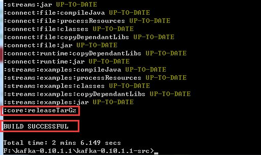
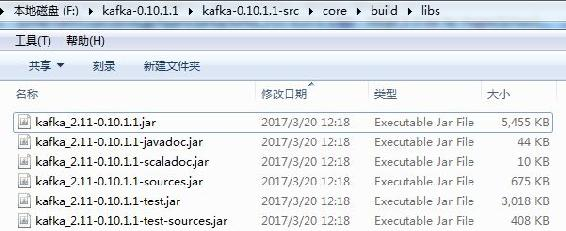
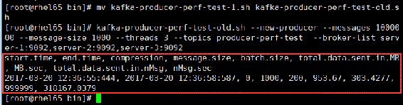

Kafka自带了一个在终端演示生产者发布消息的脚本kafka-console-producer.sh，熟练掌握该脚本用法，更能直观帮助我们理解生产者发送消息的过程。运行该脚本启动一个生产者进程，在运行该脚本时可以传递相应配置以覆盖默认配置，该脚本提供3个命令参数用于设置配置项的方式。
该脚本还支持其他命令参数，包括配置消息序列化类、配置消息确认方式、配置消息失败重试次数等，这里不一一列举。
Kafka自带了一个kafka-console-producer.sh脚本，通过执行该脚本可以在终端调用Kafka生产者向Kafka发送消息。该脚本运行时需要指定broker-list和topic两个必传参数，分别用来指定Kafka的代理地址列表以及消息被发送的目标主题。同时该脚本还支持其他可选参数，例如，通过参数sync指定以同步模式发送消息，property参数后跟配置项键值对，producer.config参数加载一个生产者级别的配置文件等，这里不一一列出，读者可以参考表4-6所示的生产者配置说明。
执行以下命令，启动一个向主题kafka-action发送消息的生产者，同时指定每条消息包含有Key：
kafka-console-producer.sh --broker-list server-1:9092,server-2:9092,server-3:9092
--topic kafka-action --property parse.key=true该命令执行后，控制台等待客户端输入消息。由于没有指定消息Key与消息净荷（payload）之间的分隔符，默认是以制表符分隔。若希望修改分隔符，则通过配置项key.separator指定。例如，执行以下命令启动一个生产者，同时指定启用消息的Key配置，并指定Key与消息实际数据之间以空格作为分隔符。
kafka-console-producer.sh --broker-list server-1:9092,server-2:9092,server-3:9092
--topic kafka-action --property parse.key=true --property key.separator=' '在控制台分别输入一批消息，消息Key与消息实际数据之间以空格分隔。然后执行以下命令，验证消息是否发送成功。
kafka-run-class.sh kafka.tools.GetOffsetShell --broker-list server-1:9092,
server-2:9092,server-3:9092 --topic kafka-action --time -1该命令用于查看某个主题各分区对应消息偏移量。可以通过partitions参数指定一个或多个分区，多个分区之间以逗号分隔，若不指定则默认查看该主题所有分区；time参数表示查看在指定时间之前的数据，支持−1（latest）、−2（earliest）两个时间选项，默认取值为−1。
执行以上命令输出结果信息如下，共3列，分别表示主题名、分区编号、消息偏移量：
kafka-action:2:6
kafka-action:1:6
kafka-action:0:4通过结果信息可知，总共产生了16条消息，3个分区按编号从大到小依次有6条、6条、4条消息。
在5.2节已提及，若开启了自动创建主题配置项auto.create.topics.enable=true，当生产者向一个还不存在的主题发送消息时，Kafka会自动创建该主题。例如，执行以下命令启动一个生产者向主题（该主题未创建）“producer-create-topic”发送消息：
kafka-console-producer.sh --broker-list server-1:9092,server-2:9092,server-3:9092
--topic producer-create-topic生产者启动成功后，在控制台输入以下信息并按回车键，模拟生产者向主题producer-create- topic发送消息：
Producer sends message to a topic that doesn't exist yet此时控制台输出以下信息：
WARN Error while fetching metadata with correlation id 0 : {producer-create-topic=
LEADER_NOT_AVAILABLE} (org.apache.kafka.clients.NetworkClient)输出以上警告信息是由于当向该主题发送消息时该主题并不存在，因此获取不到该主题对应的元数据信息，此时就会创建一个新主题，该主题有${num.partitions}个分区和${ default. replication.factor}个副本。
Kafka生产的消息以二进制的形式存在文件中，为了便于查看消息内容，Kafka提供了一个查看日志文件的工具类kafka.tools.DumpLogSegments。通过kafka-run-class.sh脚本，可以直接在终端运行该工具类。例如，查看主题producer-create-topic相应分区下的日志文件，执行命令如下：
kafka-run-class.sh kafka.tools.DumpLogSegments --files /opt/data/kafka-logs/
producer-create-topic-0/00000000000000000000.log上述命令，files是必传参数，用于指定要转储（dump）文件的路径，可同时指定多个文件，多个文件路径之间以逗号分隔。
Kafka提供了一个用来测试生产者性能的工具脚本kafka-producer-perf-test.sh，通过该工具可以对生产者性能进行调优，通过优化不同的配置来提升生产者的发送速率，从而得到一组最优的参数配置，提高吞吐量。
Kafka自带的生产者测试脚本核心代码内容如下：
exec $(dirname $0)/kafka-run-class.sh org.apache.kafka.tools.ProducerPerformance "$@"该脚本调用的是org.apache.kafka.tools.ProducerPerformance类，该类在tools工程下，用Java语言实现，与之前版本的Kafka相比，Kafka 0.10.1.1版本中生产者性能测试工具并没有提供线程数设置的threads参数，我认为这应该与当前版本的KafkaProducer实现方式有关，通过Java语言重新实现的KafkaProducer是线程安全的，多线程共享同一个KafkaProducer实例要比每个线程创建一个实例在发送消息时要快得多，而当前ProducerPerformanc类中也没有采用多线程的实现方式。同时，当前版本的脚本将指定连接Kafka代理地址的参数不再是直接通过参数broker-list设置，而是通过参数producer-props指定配置项的形式设置，通过配置bootstrap.servers来指定代理列表。该工具支持参数详细说明如表5-2所示。
表5-2 Kafka测试工具参数说明
|
参 数 名 |
参 数 说 明 |
|---|---|
|
topic |
指定生产者发送消息的目标主题 |
|
num-records |
测试时发送消息的总条数 |
|
record-size |
每条消息的字节数 |
|
throughput |
限流控制 |
|
producer-props |
以键值对的形式指定配置，可同时指定多组配置，多组配置之间以空格分隔 |
|
producer.config |
加载生产者级别的配置文件 |
需要特别说明的是，throughput参数是用来进行限流控制的。当throughput值小于0时则不进行限流；若该参数值大于0时，当已发送的消息总字节数与当前已执行的时间取整大于该字段时生产者线程会被阻塞一段时间。生产者线程被阻塞时，在控制台可以看到输出一行吞吐量统计信息；若该参数值等于0时，则生产者在发送一次消息之后检测满足阻塞条件时将会一直被阻塞。
例如，向一个名为“producer-perf-test”的主题发送100万条消息，每条消息大小为1000字节，同时acks设置为all，对应的acks值为−1，测试Kafka生产消息的性能执行命令如下：
kafka-producer-perf-test.sh --num-records 1000000 --record-size 1000 --topic
producer-perf-test --throughput 1000000 --producer-props
bootstrap.servers=server-1:9092,server-2:9092,server-3:9092 acks=all测试结果输出如下：
1000000 records sent, 237812.128419 records/sec (226.80 MB/sec), 105.50 ms avg latency,
340.00 ms max latency, 101 ms 50th, 223 ms 95th, 238 ms 99th, 240 ms 99.9th测试输出结果各字段说明如表5-3所示。
表5-3 Kafka压力测试输出字段说明
|
字 段 名 |
描 述 |
|---|---|
|
recores sent |
测试时发送的消息总数 |
|
records/sec |
以每秒发送的消息数来统计的吞吐量 |
|
MB/sec |
以每秒发送的消息大小（单位为MB）来统计的吞吐量 |
|
avg latency |
消息处理的平均耗时，单位为ms |
|
max latency |
消息处理的最大耗时，单位为ms |
|
50th/95th/99.9th |
分别表示50%、95%、99.9%的消息处理耗时 |
由于不同环境配置压力测试结果不一样，这里只是介绍如何使用该工具对生产者进行压力测试，并不打算给出一份压力测试的完整数据，请读者依据此方法自行进行相关压力测试。例如，通过设置不同参数配置、消息数、每条消息字节数、消息同步方式、是否有消费者在消费等场景对比压测，这里不再介绍。
生产者压力测试的脚本调用的是kafka.tools.ProducerPerformance.Java类，该类已丢弃了对线程数的设置，如果希望在压力测试时可指定线程数，我们可以修改该类然后重新编译，并替换$KAFKA_HOME/lib目录下的kafka-tools-0.10.1.1.jar文件，或者修改该脚本，在该脚本中调用kafka.tools.ProducerPerformance。这里采用修改脚本的方式，将原脚本复制一份，并重命名为kafka-producer-perf-test-old.sh，将该脚本内容修改如下：
exec $(dirname $0)/kafka-run-class.sh kafka.tools.ProducerPerformance "$@"在终端直接运行该脚本，会在控制台输出该脚本所支持的参数，修改后的脚本支持更多的参数，其中thread参数用于设置生产者线程数，new-producer参数用于设置创建的生产者为org.apache.kafka.clients.producer.KafkaProducer，同时还支持多主题设置、测试结果导出到CSV文件中等。
通过threads参数设置线程数为3，messages参数设置发送的总消息数，message-size参数设置每条消息的字节数，sync参数设置生产者以同步模式发送消息，broker-list参数设置代理地址列表，再次执行上述性能测试用例，执行命令如下：
kafka-producer-perf-test-old.sh --new-producer --messages 1000000 --message-size
1000 --threads 3 --topics producer-perf-test --broker-list server-1:9092,server
-2:9092,server-3:9092该命令执行时在控制台输出以下错误信息：
WARN Error registering AppInfo mbean (org.apache.kafka.common.utils.AppInfoParser)
Javax.management.InstanceAlreadyExistsException:
kafka.producer:type=app-info,id=producer-performance错误原因在于KafkaProducer在实例化时会实例化JMX管理相关组件，该组件会通过client.id配置注册相应的MBean对象，若注册时的client.id相同，也会报此错误，而在Scala版本的ProducerPerformance源码中对client.id设置的代码如下：
props.put(ProducerConfig.CLIENT_ID_CONFIG, "producer-performance")可以看到，对client.id设置为一个固定值，这样会导致在threads设置大于1时，由于为每个线程实例化一个KafkaProducer对象时client.id为同一值，JMX组件注册MBean对象时就会报错。
我们将该行代码修改为：
props.put(ProducerConfig.CLIENT_ID_CONFIG, "producer-performance"+System.
currentTimeMillis());然后按以下步骤将kafka源码重新编译成新的jar文件。
（1）设置Scala版本。由于本书所研究的Kafka版本为kafka_2.11-0.10.1.1，因此在对Kafka部分jar文件替换时也要保证编译Kafka的Scala版本为2.11相应版本，否则替换相应jar文件运行Kafka时，由于Scala版本不一致而导致Kafka启动失败。查看Kafka启动日志，错误信息如下：
Caused by: Java.lang.ClassNotFoundException: scala.collection. GenTraversableOnce进入Kafka源码目录下，编辑gradle.properties文件，确保Scala版本为2.11相应版本，本书用的Scala的版本为2.11.8，则对应的配置如下：
scalaVersion=2.11.8（2）构建Kafka源码jar文件。在Kafka源码目录下执行gradlew releaseTarGz命令，将Kafka源码构建成相应jar文件。
.\gradlew releaseTarGz编译成功后，控制台部分输出信息如图5-2所示。

图5-2 Kafka源码编译jar文件编译输出日志
进入Kafka源码core/bulid/libs目录下可看到该命令执行后构建的相应jar文件，如图5-3所示。

图5-3 Kafka源码编译为jar文件执行结果
（3）替换jar文件。登录Kafka集群服务器，用上一步构建的jar文件替换各代理的$KAFKA_ HOME/libs目录下相应jar文件，重新启动集群。
（4）执行测试命令。再次执行测试脚本，启动新版本的生产者，同时指定线程数为3，执行命令及测试结果如图5-4所示。

图5-4 KafkaProducer多线程测试结果
这里更多的是希望介绍Kafka构建jar文件的方法，对测试脚本的应用不再进行更多介绍。